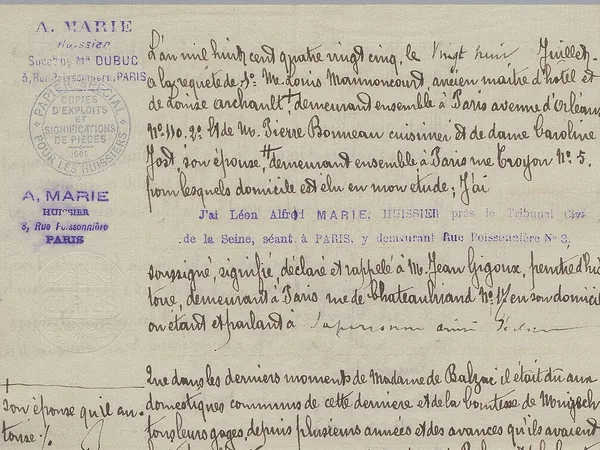

Notairesعدول الإشهاد70
Notairesعدول الإشهاد70
Huissiers de justiceعدول التنفيذ72 Traducteursالمترجمون66
Traducteursالمترجمون66Aucun résultat. Essayez un autre mot ou un autre gouvernorat.لا توجد نتيجة. جرّب كلمة أو ولاية أخرى.
Par gouvernoratحسب الولاية
Arianaأريانة8Béjaباجة10Ben Arousبن عروس11Bizerteبنزرت10Gabèsقابس10Gafsaقفصة9Jendoubaجندوبة9Kairouanالقيروان10Kasserineالقصرين9Kébiliقبلي8Le Kefالكاف9Mahdiaالمهدية9La Manoubaمنوبة9Médenineمدنين12Monastirالمنستير10Nabeulنابل12Sfaxصفاقس12Sidi Bouzidسيدي بوزيد9Silianaسليانة9Sousseسوسة15Tataouineتطاوين9Tozeurتوزر7Tunisتونس15Zaghouanزغوان6
Vous êtes un professionnel ?هل أنت مهني؟
Soyez trouvé par les Tunisiens qui vous cherchent. Votre fiche existe peut-être déjà : ajoutez-la, vérifiez-la ou corrigez-la gratuitement.اجعل التونسيين الذين يبحثون عنك يجدونك. ربما بطاقتك موجودة: أضفها أو وثّقها أو صحّحها مجانًا.
Gratuit aussi sur nos sitesمجانًا أيضًا على مواقعنا
Modèles de documents gratuitsنماذج وثائق مجانية →Contrats, attestations et démarches, en français et en arabeعقود وشهادات وإجراءات بالعربية والفرنسيةVendre une voiture : contrat et étapesبيع سيارة: العقد والمراحل →Louer une maison : contrat et étapesكراء منزل: العقد والمراحل →Divorce : les démarchesالطلاق: الإجراءات →Votre avisرأيك يهمّنا
Une remarque, une erreur, une idée ? Écrivez-nous : chaque message est lu.ملاحظة، خطأ، فكرة؟ اكتب لنا: كل رسالة تُقرأ.